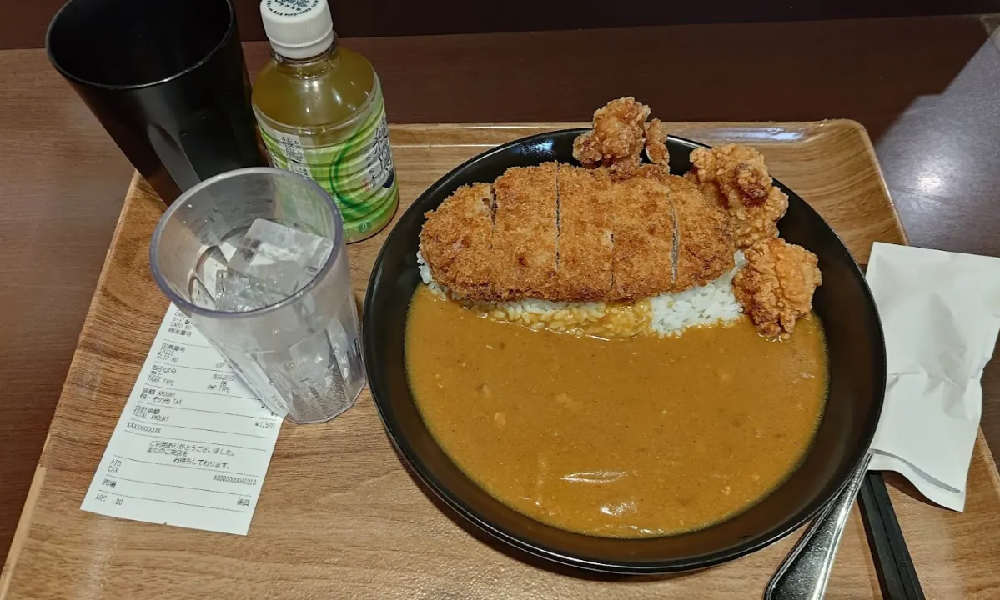
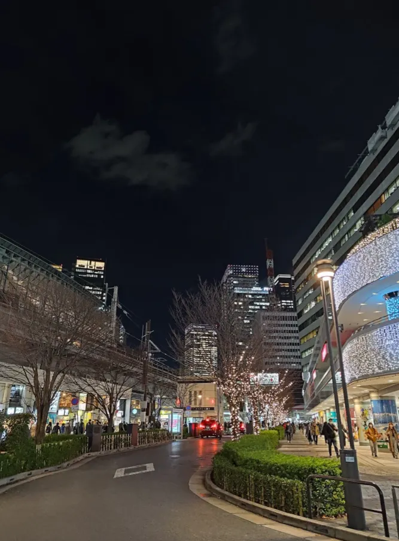

本本量應該跟駿河屋駅前店差不多，就如圖中那樣，大概就是兩排書櫃，到3F之後還要特別找一下，但是他的tag很多，主要是依據作品、作者區分的，同時也有很新的本本。
主要因為我在指南針買太多，所以我購買的策略有做一個變更，便宜的不一定會買，主要是憑經驗和直覺，精挑細選買不買可惜的，最後買了11本，總共¥6690，最便宜的¥200，最貴的¥1650。
但也因為這間店比較小以及我的策略，導致逛得比較快離關門還有很多時間，同時剛好就在地鐵站附近，所以我決定再去逛駿河屋
駿河屋 秋葉原 駅前店
平日11:00–21:00 / 假日10:00–21:00，Duty Free
介紹的部分Day 0講過了，只是因為那天沒有時間好好逛，這次大概把所有tag掃過，也有去翻沒有包裝的雜書，雜書區大概有一半是一般向的，雖然沒有包裝，但是價格其實沒有比較便宜，算是在挖寶。 臨走發現他們的漫畫有些還蠻便宜的，所以買了本7商業誌，以及12本同人誌，漫畫最便宜¥400，最貴¥1200，總共¥9120，因為也是逛到店員來提醒要關門，結果忘了免稅。
(左)7商業誌+12本同人誌，漫畫最便宜¥400，最貴¥1200，總共¥9120
(右)11本，總共¥6690，最便宜的¥200，最貴的¥1650Day 4


JOYSOUND上野広小路店
本來是要跟前幾天繼續買本本，但是機會難得朋友會去唱日K，所以就跑去唱兩個小時了，中途還有跑去唐吉軻德買個家人要的藥妝跟伴手禮。
結束就一樣會到秋葉原，但是店大多數都關了，所以今天沒有戰利品。
Day 5
講是這樣講，但是托運行李一直都有過重的風險，華航經濟艙的標準是23公斤，如果超過就是加0.5件行李的錢，但還是不能超過32公斤，我原先的行李大概是18公斤左右，所以我的假設是，如果超出3公斤以內，也就是26公斤以內的話，那我就想辦法自隨身行李多背3公斤，這樣就可以把托運行李不會超重，但同時也就表示我不能再買東西。
所以我就拿去旅館櫃檯秤重，結果是32公斤，看來我也不用煩惱了，看來是一定會超重要加錢了，同時，我似乎也不能再買東西，因為已經碰到32公斤的上限了，後來經過我把隨身行李爆塞一波，托運行李箱減重到26公斤，也就意味著我最多可以再買8公斤
根據AI，1本同人誌大約135g，100本約13.5kg，換言之，我大概只能在買60本左右，但是我不敢極限操作，所以我給自己大概抓上限50本，
McDonald’s 麥當勞BIC CAMERA AKIBA店
先去吃麥當勞的McGriddles，俗稱鬆餅漢堡，聽說台灣排到爆，但是要注意這是早餐限定，所以要在10:30點到，我自己吃起來感覺蠻膩的。
唐吉訶德 秋葉原店
因為MANDARAKE COMPLEX 中午12:00才營業，所以早上非常餘裕，所以在附近晃晃，剛好有人託我去唐吉軻德買東西，就去逛逛了
外觀抓官方的圖，總共8樓，店內大多都不能照相，只有這個初音可以照相
唐吉訶德 秋葉原 | Japan Shopping Now
地區 關東 東京 地址 郵遞區號：101-0021東京都千代田區外神田4-3-3 交通手段 JR山手線，JR總武線，東京地鐵日比谷線，東京地鐵銀座線，JR"秋葉原站"（電器街出口）步行3分鐘，東京地鐵銀座線"末廣町站"，步行3分鐘…
animate
然後就晃到安麗美特，有很多LL的東西
駿河屋 秋葉原 本館
後來就晃到MANDARAKE COMPLEX，但是剛開門人有夠多，所以就在附近逛一下，就順便來駿河屋本館看一下，本館基本上沒有本本，比較多遊戲、動畫、影片之類的，所以也就隨便逛，結果買了¥480的中古遊戲
左圖抓官網的，走旁邊的樓梯可以看到旁邊的MANDARAKE COMPLEX
Can Do
旁邊還有一家百元商店，買了兩個透明盒，含稅¥220
MANDARAKE COMPLEX
店門口比較少人後終於可以進去，因為Day 1介紹過，這邊也不贅述，但有趣的是，旁邊的牡丹麵屋可能因為是假日，排隊的人爆多，排到要分段跟最後尾 最後我買30本，主要還是因為怕超重，我還要留一點餘裕給其他東西，所以策略上更加保守，基本上一個作者的只買一本，主要是認識一些我不知道的作者，或者是買我喜歡的作者的稀少品，之後也多買了一本商業誌漫畫，
可能因為數量不少，所以這次給我紙袋裝本本，而且紙袋既然還不用錢，30本總共含稅¥19030，免稅¥17300，最便宜的¥200，最貴的¥1500。
無論在幾樓買的東西請記得到一樓做免稅手續。
らしんばん秋葉原店新館
後來就真的在閒逛，因為就算要買也不能買太重的東西了，所以有跑去Day2去過的指南針逛，但是這次就沒買本本了，就是每層晃一下，有些店的周邊蠻齊全的，可以來挖寶。其中我在3F的買賊王補了一些WS的狂三卡，這個等我收全了在獨立開一篇。
駿河屋 秋葉原トレカ・ ボードゲーム館
後來真的無聊，就找另一家駿河屋逛，賣很多桌遊、卡牌
我就補了一些我還沒有的狂三卡套
剩下就是一些旅程中的雜圖
還再GO!
回到旅館我量了一下今天買的所有東西，大概5.2公斤，加上我我清過的托運行李26公斤，加起來應該可以壓在32公斤以內。
最後收拾行李的時候，我嘗試把所有本本塞到行李箱，發現剛好有一半都是本本，好像石油王，但是這樣會超重，所以我還是把一些本本移到隨身行李。
Day 6
總之經過我的調整，把密度大的盡量放到隨身行李，也就是本本，比較厚重的衣物就穿在身上，最後一樣拿去櫃檯秤重
各位觀眾，31.2公斤壓線，同時隨身行李逼近12公斤，check out完大概10:30，順便會給check in時住宿稅的收據。
本來還想說可以去秋葉原逛逛，但是我感覺我在全副武裝行軍，所以還是算了，但是天氣一樣很好
因為是下午的飛機，所以時間上也沒有說很充裕，也就沒有找locker放行李了再去逛逛，何況我隨便買可能就超重了，所以也就認命地吃個早午餐就準備搭機了，意外的是週日飛台灣的人有夠多。
喔對了，雖然是壓線在32公斤內，但是還是超重得加錢，¥8270，刷下去是台幣1797，心在淌血
後記
回到家後把所有東西大致照時間順序疊起來長這樣，旁邊剛好有個電扇當作比例尺
簡單的羅列一下買的本本的資訊
全局統計總共158本，總計¥83273，如果再加上超重的錢¥8270那就是¥91543，總重約21.8公斤，平均每本138g、¥579，其中最便宜¥180，最貴的¥2360，都在Day 2的らしんばん秋葉原店新館。
如果每本平均算做是120元還算是划算，如果有做好功課，撇除掉超重的話每本大概是110元，如果再撇除掉我有買的一些極端值，你甚至可以當作一本大約台幣100，這也就難怪之前指南針來FF賣的時候一本是100。
心得
其實比起本本，這趟心得主要的還是這是我第一次出國，雖然說日本的華人不少，現在翻譯軟體也很發達，但是不免還是會緊張，只是好在一個月前有先跟朋友來日本【旅遊】Love Live 虹咲 7th Live + 東京四日遊，算是把環境摸熟，同時我也很幸運剛好有認識的朋友就在日本工作，雖然不是每天見面，但至少我真的出問題有個當地人還是比較心安。 而且剛好這幾天其實沒有想像中冷，大概就是低台灣五度左右，用台灣的冬日衣物也可以應付，同時也算乾燥，整體來說蠻舒服的。回過頭來說秋葉原，因為Day 5的一整天基本上都在隨便晃，基本上就是看哪邊人多就過去看看，可以觀察一下我當天的GPS紀錄。
除去西南(左下角)是旅館外，基本上就是不停地在那條大街(好像叫做中央通)上來回，能逛的東西差不多就圍繞在那條街上，後來往東走是因為想看看離開那條街有甚麼，但還真的沒有什麼。
所以如果之後要做行程規劃基本上就圍繞著這個區域就好，再回過頭來講本本，基本上賣本本的店也在這周圍，這次這樣的行程規劃也算是滿足了一個願望，因為以前雖然也多少逛過這些店，但是通常一群人不可能在一家店停留2個小以上，可是這次只有我一人所以能夠買到爽，同時也大概對秋葉原甚麼樣的東西有個初步的認識。
雖然嚴格意義上來說不是買到爽，因為後來超重的問題，其實當下我知道鐵定要加錢的時候，當下有兩個念頭，一個是把衣服之類的全丟了，第二個就是買到上限去攤平這個運費，毫無懸念的我選了後者，買越多省越多，豈不美哉
總之，如果有人跟我有類似的規劃，最好行前先計算好重量，可以買幾本要有個概念，旅館應該都有秤(scale)，至於行程的規劃，店名都在上面了，如果要完整的全部翻完，我估計要整整兩天，當然這就自己的規劃。